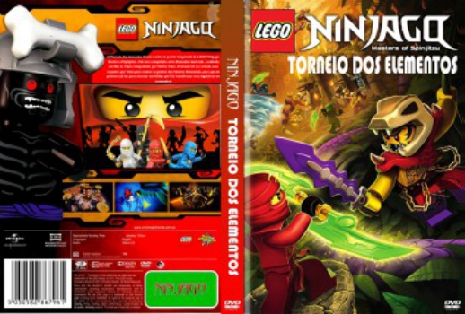

LEGO Ninjago: Torneio dos Elementos (2015)

Avaliação (IMDb):

Avaliação (Usuário):

5.0/10
Outro Título:LEGO Ninjago: Tournament of Elements
País:United States, 115 minutos
Idiomas falados:Inglês, Espanhol, Português
Gênero(s):
Diretor(s):
Codec:MPEG-2 (DVD)
Número: 1904
Sinopse:
O Torneio dos elementos foi um evento na quarta temporada de LEGO Ninjago: Masters of Spinjitzu . Foi uma competição entre Elemental mestrado , realizada em Ilha de Chen e hospedados por Mestre Chen. O torneio foi na verdade uma manobra por Chen para roubar os poderes dos Mestres Elementais, para que ele pudesse usá-los para executar um feitiço que iria transformar seus seguidores em Anacondrai.
Elenco:
Tipo de mídia: DVD5,
Legendas: Inglês
Alugado: Não
Tela: 16:9 Widescreen